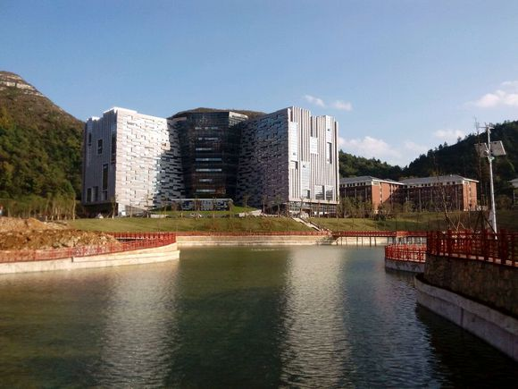
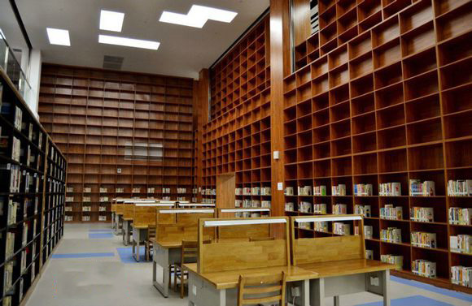
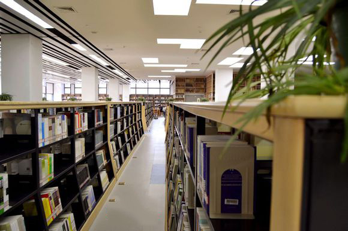
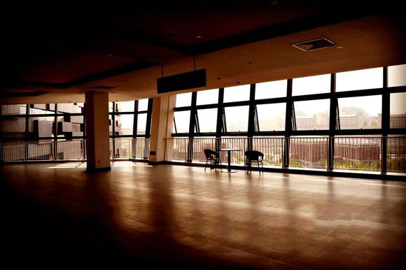

首页
数据大厅
图书馆数据分析
食堂数据分析
团队简介
{{h2}}
{{h3}}

第二屏的第二屏
某某数据
ttt

某某数据
zzz
某某数据
qqq
eee

某某数据
fff

某某数据
ddd
某某数据
ccc
某某数据
bbb
aaa
aaa
aaa
第二屏的第三屏
第二屏的第四屏
第二屏的第五屏
第二屏的第六屏
早中晚
均值消费
比值
一食堂
二食堂
三食堂
四食堂
隐藏
翠竹苑
丹桂苑
玉兰苑
樱花苑
隐藏
放大
缩小
距离量测
第三屏的第二屏
第三屏的第三屏
第三屏的第四屏
第三屏的第五屏
第三屏的第六屏
贵州省“电子商务技术与安全”特色重点实验室©copyright Guizhou Province Key & Special Laboratory of "Technology & Security of E-Business"©copyright